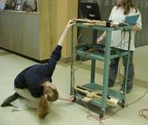
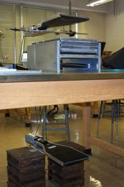
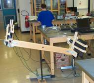
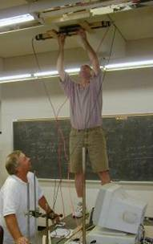

Experiments

A student uses a meter stick to measure the distance between her
paddles for the Paddle Separation experiment.

Sheets of lead have been stacked between two paddles to take data
for the Absorption Experiment.

The “Willie Wheel” rotates the paddles, so it’s
perfect for measuring muon rate as a function of angle.

A teacher maximizes paddle separation for the Muon Speed lab by
securing a paddle to the ceiling.
|
Introduction
For each type of classroom experiment, the results obtained
by teacher or student researchers are categorized in the table
below. While
“Ideas” briefly introduce the experiment and bring
up important questions for considerations, they leave the
procedure up to the student. The “Student Notes”
are materials prepared by teachers for their students. The
"Teacher Notes" are detailed write-ups or presentations,
including that teacher’s procedure, data analysis, and
results. We recommend not giving the students this much detail,
but letting them design an experiment on their own. When available,
raw data is included for comparison with your own experiments
or for data analysis practice.
Refer to the Experiments
Overview for a discussion of:
- the difference between the terms count, rate, and flux
- how long runs should be
- how far apart the paddles should be
- where shielding (or absorber) should be placed and how
much there should be
Refer to the following links for instructions on two different
methods for performing Time of Flight Calibrations (Do you
need to calibrate? If so, which method is appropriate for
your experiment?):
|
Table
of Classroom Experiments
Adobe
Acrobat is required to view many of the files below.
Credit has been given to the authors when their names were included in the documents; please email us to have a document identified as your work or to indicate the date.
If you would like to share the results of an experiment your class has performed, please email us a copy of your work!
| Experiment |
Ideas |
Student Notes |
Teacher Notes |
| Type of Absorber |
Idea |
|
#1: Effect of Absorber Material and Thickness on Muon Count (by Ed Kolb & Chris Testa)
Data for #1: Lead,
Absorber
#9: Fitting Lead Absorption Data (emphasis on analysis) |
| Placement of absorber |
Idea |
|
|
| Thickness of Absorber |
Idea |
|
See Write-up #1 and its data |
| Cosmic Ray Showers in Material |
Idea |
|
|
| Scattering of Cosmic Rays |
Idea |
|
|
| Paddle Separation |
Idea |
Students
Notes for #2 |
#2: Horizontal Separation Experiment (by Bob Meek & Don Dean, Summer 2004)
Data for #2: 4,6,8,10,12,20 |
| Variation with Pressure |
Idea |
|
#11: Simulating Changes in Air Pressure Using Water (by Barbara Barker, Summer 2005)
Lesson
Plan for #11 |
| Variation with Temperature |
Idea |
|
|
| Variation with Time |
Idea |
|
|
| Angular Dependence (Altitude) |
Idea |
|
#10: Muon Rate vs. Angle (by Joan Taber)
#13: Noise Filtration for Counting Horizontal Muons (by Patrick Frievald, Summer 2005)
Data
for #13 |
| Angular Dependence (Azimuthal) |
Idea |
Student
Notes for #4 |
#4: Dependence of Muon Rate on Direction: N, S, E,W (by Rachael Anderman and Carol Hoffman)
Presentation
for #4
Data for #4: 0,45,90,135_1,135_2 |
| Dependence on Location |
Idea |
|
#3: Does Location Make a Difference in Muon Rates: Indoor vs. Outdoor
(by Richard Thorley and Kelly Hebden)
Presentation
for #3
#8: Muon Rate vs. Ceilings (by Barbara Barker and Dick Hendrick) |
| Muon Lifetime |
|
|
#5: Muon Lifetime Laboratory Instructions (emphasis on procedure)
#6: Developing a Best Fit Exponential Curve for Muon Lifetime (emphasis on analysis) |
| Comparison of flux to SLAC's data |
Idea |
|
|
| Muon Speed |
|
Student
Notes for #14 |
#7: Finding Muon Speed with a Two Paddle Set-Up
Presentation
for #7 (Summer 2003)
Data for #7: small,
large
#12: Calculating Muon Speed with a Three Paddle Set-up (by Chris Testa, Summer 2005)
#14: Finding Muon Speed with a Three Paddle Set-up (by Greg Baker, Summer 2005)
#15: Upward Moving Muons? (by Carol Hoffman, Summer 2005) |
| Cosmic Rays in Flight |
|
|
Byron Bergen's Plane
Flight Presentation
Data from Plane Flight, Binned in Time: 1,5,10
Data Plots from Plane Flight, 2004
Analysis
Briana and Kate Summer 2005 Analysis
with Reanalyzed Data - Binned by Altitude Data
Data Plots from Plane Flight, 2004
Analysis
|
|
| |
|